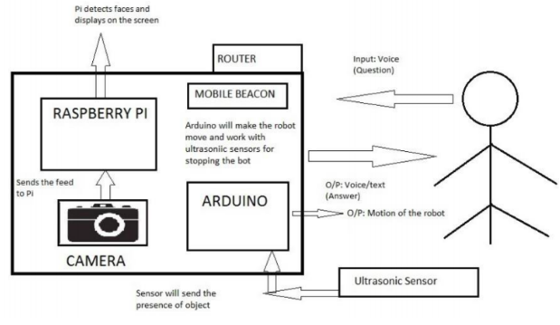

Airport Assistance System
By: Tarushree Gandhi, Sakshi Ganeriwal, Darshan Shah, Anshita Purwar [VIT University, India]
As we are moving forward towards an era of technology and development, machinery assistance is being sought rather than human assistance. Robots are emerging in various different areas, for example Amazon's drones for delivery purposes, bots for military assistance etc. We proposed a robot prototype to be deployed in airports for assisting passengers. It aims at helping the passengers by answering their queries like 'where is the nearest coffee shop?', 'when is the next flight to London?' etc. The query processing module is implemented using Raspberry Pi. When a user asks a question, Pi recognizes voice and proceeds by processing the query. Along with answering queries, the robot can move from one place to another, stopping everytime it detects an obstacle on it's way. To achieve autonomous motion, we designed a robot with radio-based beacons. Beacons update the current location of the robot, following which it performs motion . The robot also extends face detection feature.
The main modules of the project are:
1. Navigation and localization
2. Voice recognition and query processing
3. Face detection
4. Obstacle detection
Software used : Linux, Python, OpenCV, Wolfram Alpha, Arduino Software (IDE), Raspbian OS (based on Debian optimised for the Raspberry Pi hardware)
Hardware used : Raspberry Pi, Arduino Mega, Ultra-sonic sensors, Raspberry Pi Camera Module, Beacons
Architecture Diagram
{kind=link}